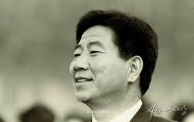

- 약력
- 일생
- 평가
약력

1959 진영대창국민학교 졸업
1963 진영중학교 졸업[15]
1966 부산상업고등학교 졸업
1966 삼해공업 사원[16]
1966 제7회 사법 및 행정요원 예비시험 합격
1971 육군 제1군사령부 제3군단 제12보병사단 제52보병연대 2대대 상병 만기 제대[17]
1975 제17회 사법시험 합격
1977 제7기 사법연수원 수료
1977 대전지방법원 판사
1978 노무현 법률사무소 변호사
1981 부산YMCA 이사
1982 노무현·문재인 법률사무소 변호사[18]
1984 부산공해문제연구소 이사
1985 부산민주시민협의회 상임위원장
1987 부산민주헌법쟁취국민운동본부 상임집행위원장
1987 공정선거감시운동 부산본부장
1988 제13대 국회의원 (부산 동)
1988 제13대 국회 노동위원회 간사
1988 제13대 국회 제5공화국에있어서의정치권력형비리조사특별위원회 위원[19]
1988 통일민주당 노·사문제특별위원장
1990 민주당 기획조정실장
1991 민주당 대변인
1992 제14대 국회의원 선거 민주당 후보 (부산 동)
1992 제14대 대통령 선거 김대중 후보 선거대책위원회 청년특별위원장 겸 물결유세단장
1993 민주당 최고위원
1993 지방자치실무연구소 소장[20]
1993 법무법인 해마루 변호사[21]
1995 제1회 전국동시지방선거 민주당 부산광역시장 후보
1995 통합민주당 부총재
1996 제15대 국회의원 선거 통합민주당 후보 (서울 종로)
1996 국민통합추진회의 상임집행위원
1997 새정치국민회의 부총재
1997 제15대 대통령 선거 김대중 후보 선거대책위원회 파랑새유세단장
1998 제15대 국회의원 (서울 종로)[22]
1998 제15대 국회 교육위원회 위원
1998 제15대 국회 예산결산특별위원회 위원
1998 새정치국민회의 부당노동행위대책특별위원장
1998 고려대학교 노동대학원 노동정책과정 수료[23]
1999 새정치국민회의 경남도지부장
1999 새정치국민회의 동남지역발전특위위원장
1999 새정치국민회의 실업대책특별위원회 자문위원장
1999 고려대학교 정책대학원 최고위정책과정 수료[24]
2000 제16대 국회의원 선거 새천년민주당 후보 (부산 북·강서 을)
2000 제6대 해양수산부장관
2001 새천년민주당 상임고문
2001 법무법인 부산 변호사[25]
2001 새천년민주당 최고위원
2002 제16대 대통령 선거 새천년민주당 후보
2003 제16대 대한민국 대통령
2004 러시아 모스크바대학교 명예정치학박사
2006 알제리 알제대학교 명예정치학박사
2007 원광대학교 명예정치학박사
2008 맑은물사랑사람들 명예고문[26]
2008 영농법인 주식회사 봉하마을 이사[27]